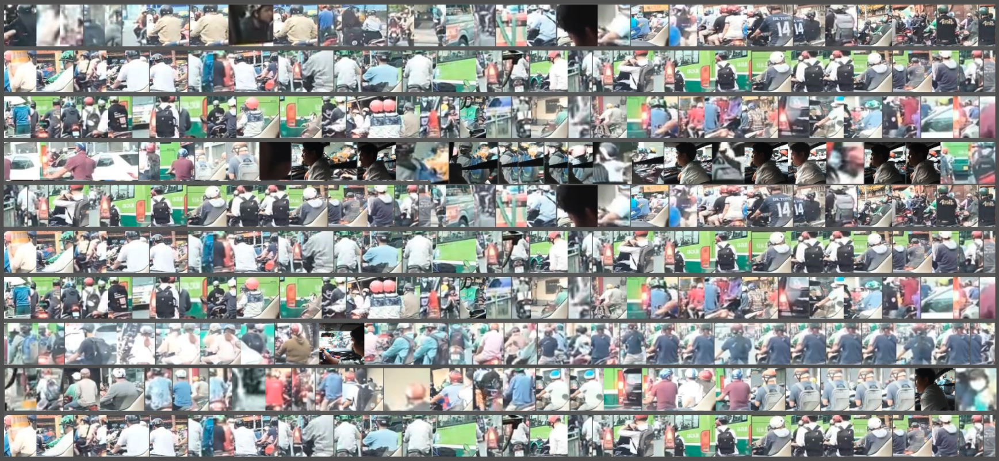

N√†o M√¨nh C√πng L∆∞·ªõt üèÑü誂Äç‚ôÇÔ∏è
‚§∑ 2023 October 15th, 3PM-5PM ‚éØ ‚ÄúHen Luot 001‚Äù @ Reading CabinCh√†o C√°c Tay L∆∞·ªõt! üèÑüèΩ‚Äç‚ôÄÔ∏è
Lướt Code chúng tôi là một câu lạc bộ khoa học sau vườn tại Thành phố Hồ Chí Minh. Để lập trình không còn là một bộ môn khó tiếp cận, câu lạc bộ tổ chức các hoạt động nhằm giảng dạy, chia sẻ và hỗ trợ các dự án liên ngành liên quan đến nghệ thuật và công nghệ.
Ở Lướt Code, chúng ta sẽ cùng thoả sức sáng tạo trên tinh thần “học đi đôi với hành”. Có thế, mình mới thấy công nghệ đẹp đẽ, thân tình và không hề xa xỉ. Các hoạt động tại Lướt Code gồm có:
- üèÑü誂Äç‚ôÇÔ∏è C√°c bu·ªïi g·∫∑p g·ª° nh·∫±m gi·ªõi thi·ªáu c√°c tay l∆∞·ªõt ch∆∞a c√≥ cƒÉn b·∫£n v·ªÅ l·∫≠p tr√¨nh v·ªõi l·∫≠p tr√¨nh s√°ng tạo,
- üèÑüèΩ‚Äç‚ôÄÔ∏è C√°c kho√° h·ªçc chuy√™n s√¢u nh·∫±m trang b·ªã c√°c tay l∆∞·ªõt nh·ªØng c√¥ng c·ª• thi·∫øt y·∫øu ƒë·ªÉ code ra nh·ªØng s·∫£n ph·∫©m c√≥ √Ω nghƒ©a,
- üèÑüèª Ngu·ªìn t∆∞ li·ªáu m·ªü ti·∫øng Vi·ªát v·ªÅ l·∫≠p tr√¨nh s√°ng tạo.
Qua đó, CLB Lướt Code mong muốn tạo ra một cộng đồng sáng tạo, nơi mà mỗi người đều có cơ hội cất cao tiếng lòng bằng ngôn ngữ chung, là lập trình.
CodeSurfing được khởi xướng bởi Nhân Phan, trong chương trình Processing Fellowship 2023. Là một dự án cộng đồng, Lướt Code trân quý sự hỗ trợ từ Processing Foundation, từ bè bạn ( wedogood, Ivy Vo, Uyen Dong, Yui Nguyen, Tùng Anh, Reading Cabin), từ cộng đồng nhà mình tại Thành phố Hồ Chí Minh.
Lướt Instagram chúng mình @codesurfing.vn


Kho√° h·ªçc ƒë·∫ßu ti√™n ‚éØ C·∫£m Quan Th·ª±c T·∫ø üÄ•
Cảm Quan Thực Tế là khoá học đầu tiên được Lướt Code phát triển. Xem lập trình là một khu vườn nơi chúng ta tìm lại kết nối với thiên nhiên, khoá học vỡ lòng này sẽ giúp các tay lướt làm quen với lập trình.
Tự thuở sơ khai, đời sống con người đã gắn liền với thiên nhiên. Cơ thể chúng ta luôn liên tục cảm nhận, phản ứng và ghi dấu lên môi trường sống xung quanh. Trong không gian số hiện nay, những âu yếm nguyên thuỷ đó dường như đã bị nuốt chửng bởi cái bóng ngày càng lớn của công nghệ.
Liệu chúng ta có thể hàn gắn những đứt gãy giữa con người, thiên nhiên và công nghệ không? Xuyên suốt khoá học, chúng ta sử dụng p5.js để xây dựng các hệ thống hỗ trợ quan sát, ghi chép và trực quan hoá những biến đổi trong đời sống. Ngoài ra, chúng ta còn học cách tích hợp lập trình vào các chất liệu nghệ thuật mà mỗi người đang thực hành.

[seoulthesoloist]
Mỗi khoá học có 12 buổi, được chia thành 4 học phần:
| PHẦN 1: KẾT NỐI | ⎯ chạm vào máy tính; làm quen với lập trình cùng p5.js. |
| PHẦN 2: TRUYỀN HÌNH | ⎯ nhìn hình ảnh, thấy thế giới; làm việc với array và function |
| PHẦN 3: TRUYỀN THANH | ⎯ chơi đùa cùng âm thanh; học về lập trình hướng đối tượng và các hiệu ứng chuyển động nâng cao. |
| PHẦN 4: TRUYỀN TIN | ⎯ cảm nhận thế giới vượt ngoài thị giác và thính giác; học cách sử dụng dữ liệu trong lập trình |
Sử Dụng Tài Liệu Này Thế Nào?
Trên trang web này, các bạn có thể tìm thấy các khoá học mở bao gồm các bài giảng mẫu, và kho tài liệu chọn lọc. CLB Lướt Code hoan nghênh sự tham gia đóng góp của tất cả mọi người vào nguồn tài nguyên cộng đồng này.
üë©ü誂Äçüî¨ Cho người dạy
Mỗi bài giảng mẫu là một buổi học khoảng 90 phút. Bài giảng mẫu mang tính chất khơi mở. Hãy sử dụng trên tinh thần tham khảo và đừng ngại bình giảng theo cách của bạn.
üèÑü誂Äç‚ôÇÔ∏è Cho người h·ªçc
Nếu tự học, bạn đừng ngại mở rộng phạm vi đề tài theo những mối quan tâm của mình. Trên hành trình đó, bộ tài liệu này sẽ là kim chỉ nam, và bạn không đi con đường này một mình. Lướt Code sẽ có những dịp để bạn kết nối và chia sẻ với những người cùng chí hướng.
Bộ Tài Liệu Có Gì?
Mỗi bài giảng mẫu bao gồm:
| üìå OBJECTIVES | Checklist of what need to be done and group of skills need to be acquired within the session. |
| üåû WARM-UP | Actitivy to get students engage with today's topic. Oftentimes, followed by a discussion. |
| üó£Ô∏è TEACH | Sharing and demonstration from teachers, includes recommend teaching flow and ready-to-use code demo. |
| üèÑü誂Äç‚ôÇÔ∏è ACTIVITY | Quick practice, discussion, and other activities to help students get a quick grasp of what they have learnt. Oftentimes, followed by a refection to summary and contemplate. This is important, we highly recommend teachers and students not to skip it. |
| ü§πü誂Äç‚ôÄÔ∏è ASSIGNMENTS | |
| üìö FURTHER READINGS |
⤷ DỰ ÁN ⎯
- Mỗi học phần đều kèm theo một phần Dự Án để người học thực hành. Hướng dẫn chi tiết cho từng dự được đính kèm ở buổi học cuối cùng của từng phần.
- CLB cũng giới thiệu một dự án mẫu để giúp học sinh xác định quy mô dự án cá nhân. Dựa theo những dự án mẫu, chúng mình yêu cầu người học viết một bài giới thiệu về dự án của mình dù lớn hay nhỏ (gồm ý tưởng, phương pháp và kỹ thuật chuyên môn). Đây là thói quen tốt để mỗi người học nâng cao khả năng ghi chú và ý thức trong sáng tạo.
Chúng mình hiện đã có bài giảng mẫu cho Phần 1. Các phần sau sẽ được sớm cập nhật!
Ahoy! In this very first unit, we will get to know p5.js, its built-in functions, and how to use them to create meaningful interaction between user and computer. We also learnt to use the p5 web editor and practice consulting the p5 online documentation.
PROJECT 1. First Letter
arrow_outwardBy the end of this unit, we make an interactive letter and send it to our loved ones. In this very intimate format of a letter, we use technology as a bridge to deliver our thoughts and emotion. The letter can be made using material that we learnt in class (shape, color, typography) and elaborated with animation and interaction via mouse and keyboard. More information about the unit project can be found in Session 3.

Sample project: "portrait" ⎯ A letter to my younger self. Fabricated summer 2017 in the dialogue of Skinny Dipping (Ocean Vuong). College ended but that summer still burns slowly. As I attempt to touch the portrait, my mind forages through words of a preoccupied teenager.
⤷ SESSION 1. First Interaction
arrow_outward- What is p5.js? Demystifying: code, language, libraries.
- Make your first p5.js sketch.
- Function: p5.js built-in function
- The coordinate system, shape, and colors
- Variables
- Simple animation and mouse interaction
- map() & lerpColor()
- if condition to control interaction and animation using
- Interaction with mouse using mousePressed()
- Interaction with keyboard using keyPressed()
- Random
- Tidy Code and Documentation
- Write your own function
- Transformation: translate(), scale(), rotate()
- push() and pop()
- Typography: adding and styling text
- Iterative: for Loop and while Loop
Upon the connection with computer we have established in Unit 1, we continue to build a more sensory interaction: seeing. Can computer see things as the way human do? In this unit, we learn to apply coding into capture and analysing images. We also learn to program a project on a more professional level, away from pure online editor.
PROJECT 2. Trace Of A City
arrow_outwardFor this unit project, students will use camera and other recording devices to capture the essences of where they are living. We incorporate programming to highlight those essences either through manipulating the images' structure or semantics.
Sample Project: “All the strangers I met on Bờ Kênh Nhiêu Lộc”, is a reflection of myself living in the overwhelming Saigon, where I ride 12km every day to work. It is a still film with a huge cast trying to get through the screen yet no one is the main character. To make this, I performed object detection on a dashcam driving through Saigon. The model extracted drivers and placed them on the mural.
⤷ SESSION 4. Working with Images
- Programming in local environment: text editor, CLI, and all things needed.
- Structure of a p5 project: index.html, style.css, and sketch.js
- üèÑü誂Äç‚ôÇÔ∏è Practice: Making buttons.
- Working with images
- Working with videos
- Control media: play, pause, loop, duration.
- üèÑü誂Äç‚ôÇÔ∏è Practice: Making Zine
⤷ SESSION 5. From Pixel to Image
- Array and array manipulation
- Color spaces: RGB and HSL.
- Canvas as a grid
- Understanding image as arrays of pixels: updatePixels() and loadPixels().
- Working with webcam.
- üèÑü誂Äç‚ôÇÔ∏è Practice: ASCII Webcam.
⤷ SESSION 6. More Than Just Pixels
- Learning images through machine learning.
- Image classification
- Object detection
- Simple machine learning application using ml5.js
- Debugging & Optimization
- Using setInterval(), setTimeOut() to schedule function execution.
Using code as an instrument to amplify the vivid world around us. In this unit, we learn to visualize sound using programming. We focus on animation and the use of algorithm and vectors on enriching our animation.
PROJECT 3: Soundscape
arrow_outwardIn this project, students go out to their neighborhood and record a soundscape. Then using programming to amplify the subject of the soundscape in visual.
Human practices require the ability of analyzing signals that we can neither see nor hear. Fishermen relies on currents, winds, and inherited knowledge to navigate. Farmers relies on rain level and temperature to adjust their harvest. This unit will guide students to design a cohesive system from devices and bodies of code to sense and make sense of surrounding data that beyond our seeing and hearing.
PROJECT 4: Personal Periscope
arrow_outwardSample Project: Prototype of a wave visualization where all the students of CodeSurfing are riding the waves according to real-time update of wind data in Ho Chi Minh City, Vietnam.
⤷ SESSION 10. The Data Pipeline
- Getting to know data and what data can do.
- Data type: .csv
- Load table and extract data with getRow, getColumn, getNum, getString.
- Quick visualization.
- Connect p5 with Google Sheet
- üèÑü誂Äç‚ôÇÔ∏è Practice: Collect and visualize your own data.
⤷ SESSION 11. The Story of Data
- Descriptive statistics, measurements of data.
- Deep dive into data visualization.
- Chart selection and storytelling in data visualization
- Data source and ethics in using data.
- üèÑü誂Äç‚ôÇÔ∏è Practice: 50 Ways to Visualize A Data.
⤷ SESSION 12. Realtime
- Datatype: JSON
- Connect p5 with Data API
- Real-time visualization
- Deploy
- Beyond data: Machine learning
- Predicting with Linear Regression